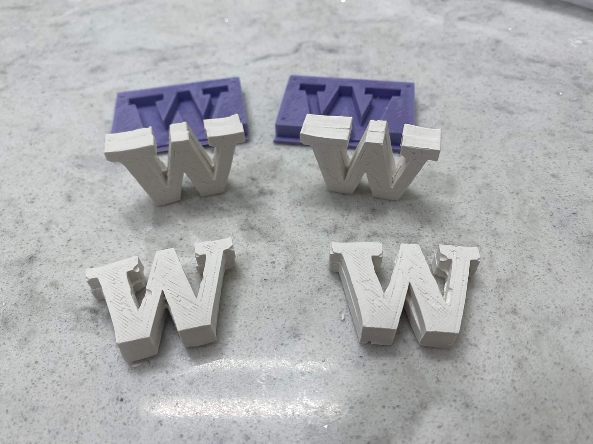
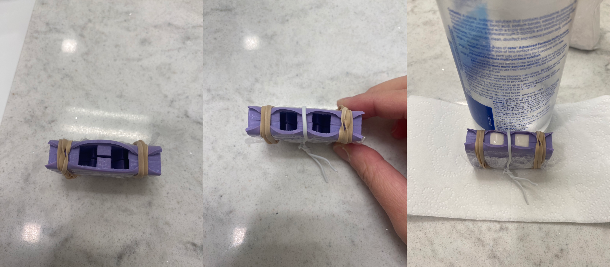
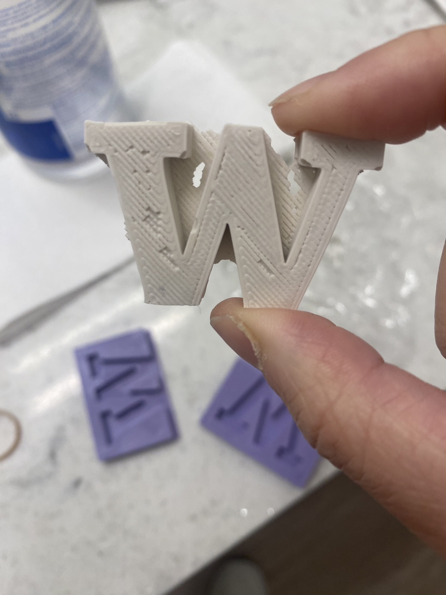

Casting with plaster
Last week, I created a mold for mold with 3D printing, and then using the 3D-printed parts and Oomoo, a silicone mold to create a UW logo was created. Continuing from the work last week, I used plaster to cast four UW logos, and here is how they turn out.
I used two rubber bands and a small strap (typically comes with electric wires and is handy in adjusting how tight I want it to be) to hold the molds together. After mixing plaster with water until the mixture is thick but still stirrable, I carefully poured the mixture into the mold. Let it sit for around an hour, and the casting is complete!
As you can see, the casting did not come out perfectly :( I had to use a knife to trim off the redundant plaster and the parts that did not line up well. I think it's because the registration points of the molds were too small and it was difficult to align them well.
Some goals and takeaways for the future me (if I've got some time): Scale up the registration points to have a better fit for the molds. Smooth out the 3D-printed parts with sandpaper first so that the surface of the silicone molds can be smooth and not affect the final casted product. Try more complex shape and not just flat-sided shape like this one!
Attachment
The casting files can be found here.